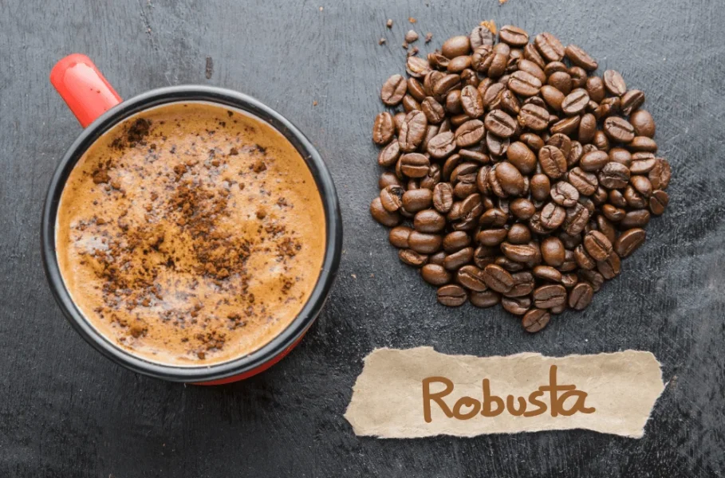

☕ Kopi Robusta
Kopi Robusta dikenal memiliki rasa yang lebih kuat, pahit, dan bold dibandingkan kopi Arabika. Kopi ini mengandung kafein yang lebih tinggi.
Robusta tumbuh di dataran rendah dengan iklim tropis dan perawatan yang relatif mudah. Di Indonesia, Robusta banyak dihasilkan di Lampung, Bengkulu, Sumatra Selatan, dan Jawa Timur.
Aroma kopi Robusta cenderung earthy dan cokelat, serta sering digunakan sebagai campuran espresso karena menghasilkan crema yang tebal.